Master Thesis: Semantic Chunk Sparse Attention for Large Language Model
Master Thesis: Semantic Chunk Sparse Attention for Large Language Model
Lecturer : Prof. Torsten Hoefler, Dr Maciej Besta, Dr Grzegorz Kwasniewski
1. Introduction
Large Language Models(LLMs) [1][2][3][4][5][6] have demonstrated significant influence across a diverse array of tasksand applications, encompassing questionanswering [7], codegeneration [8], searchengine[9],role-playing [10][11],agent-based systems [12] and even interact with externalenvironment [13]. However, to fully unleash the potentialof pretrained LLMs, they must be capable of efficiently and accurately performing long sequence generation. For instance, an LLM-driven assistant should ideally retain information for extended periods, such as weeks or months. Yet, it is challenging for LLMs to generalize to sequence lengths longer than those on which they were pretrained. For example, Llama3-Instruct 8B has a window size limit of 8k tokens, restricting its ability to handle long contexts effectively.
Two primary challenges arise when enabling LLMs for long-context generation:
-
Memory Consumption: During the decoding stage, Transformer-based LLMs cache Key and Value states, leading to increasing memory usage as the context length grows.
-
Length Extrapolation : Existing models have limited extrapolation abilities when the sequence length exceeds the attention window size set during pretraining [14][15]
To address these challenges, various methods have been proposed to extend the context length for LLMs [41][42] The most widely adopted techniques are fine-tuning [43][44] and Retrieval-Augmented Generation (RAG) [16][17]. However, these methods involve trade-offs between cost and effectiveness. For instance, fine-tuning can enlarge the context size but necessitates storing an expanding KVCache. On the other hand, RAG introduces additional prompts for context search and prefilling, which can slow down the generation speed.
In addition to these approaches, methods like Longformer [18], Heavy Hilter Oracle (H2O) [19] and StreamLLM [20] maintain only a subset of the KVCache, enabling long context generation within the limited window size fixed during training. These methods enable the generation of nearly infinite streams without additional training or memory costs, while also improving generation speed. However, they may come at the expense of accuracy. Similar to the phenomenon of ‘catastrophic forgetting’ in model training, where important learned information is overwritten, the fixed window size of LLMs requires the discarding of tokens, which can lead to the loss of critical information and degraded performance. Enhancing these methods to better preserve essential information is crucial for achieving both high-speed inference and high accuracy, even under memory constraints.
Through a detailed investigation of the attention matrix in Chapter 3, we identified the presence of semantic chunk substructures within the attention matrix of the LLaMA3-Instruct-8B model [21]. Building on this observation, we propose the Chunk Sink method, which aims to optimize memory efficiency while maintaining high accuracy. This method achieves this by caching only the first few tokens of each semantic chunk, along with a sliding window, thereby significantly reducing the number of tokens stored in memory.
Our Contributions are as follows:
-
We conducted a detailed investigation of the attention matrix, uncovering four primary patterns within it through specialized visualization techniques.
-
We proposed a novel approach, Chunk Sink, which achieves higher accuracy with minimal memory consumption.
-
We investigate the parameter sensitivity for different methods on the MMLU [22] and CEval [23] dataset indicating some latent rule.
The remainder of this thesis is structured as follows:
-
Chapter 1 introduces the main research problem addressed in this thesis, establishing the foundation for the subsequent analysis.
-
Chapter 2 provides a review of related work and existing solutions, situating our contributions within the broader context of current research.
-
Chapter 3 presents an in-depth investigation of the attention matrix, utilizing various visualization techniques to analyze and interpret the semantic chunks within the LLaMA3-Instruct 8B model.
-
Chapter 4 outlines the technical implementation of the proposed Chunk Sink method, offering a detailed, step-by-step explanation of the approach.
-
Chapter 5 describes a comprehensive set of experiments that compare different methods and evaluate the parameter sensitivity of each, providing further insights into the practical implications of our findings.
-
Chapter 6 concludes the thesis by summarizing the key contributions and offering suggestions for future research directions.
2. Related Work
The deployment of Large Language Models (LLMs) often encounters significant challenges, particularly in terms of computational efficiency. These models typically incur high computational costs, increased memory access demands, and substantial memory usage during the inference process [24]. To address these issues, particularly during the attention mechanism phase, two key areas of model-level optimization have emerged: KVCache compression and sparse attention. Notably, sparse attention can be considered a specialized form of KVCache compression, as it selectively focuses on a subset of tokens, thereby reducing the overall memory footprint and computational load.
2.1. KVCache Compression
Assuming a model can handle an infinite sequence, the memory usage of the KVCache will grow linearly as the context expands. Therefore, in scenarios involving long contexts, compressing the KVCache to minimizestorage becomes a critical concern [25]. The KVCache, which stores key-value pairs during the inference process, is a major contributor to memory consumption, particularly as context length increases. To address this challenge, researchers have investigated two primary strategies: token dropping and quantization.
2.1.1. Token Dropping
This strategy seeks to reduce memory usage by selectively discarding less relevant tokens during inference. Several methods have been proposed to implement this approach effectively.
One such method is Sliding window attention [18], which uses a first-in, first-out (FIFO) queue to store stream tokens. By applying attention within this queue, memory usage is reduced, and the attention process is accelerated. However, StreamLLM [20] found that LLMs tend to assign higher attention weights to the initial tokens in a sequence. To address this, StreamLLM supplements the FIFO queue with a "sink" that stores the first few tokens, thereby improving accuracy.
Another approach, proposed by Liu [26], hypothesizes that only tokens important in previous steps will remain significant in future steps. Building on this idea, Token Omission Via Attention (TOVA) [27] employs a greedy method to discard less useful tokens. TOVA maintains a fixed-length KVCache, evicting tokens with minimal attention weights at each decoding step on a layer-by-layer basis.
The Heavy Hilter Oracle (H2O) [19] refines this process by using cumulative normalized attention scores to determine which tokens should be retained, while also preserving recent tokens that may exhibit strong correlations with the current token. SnapKV[28] further improves the selection process by retaining the top- key-value pairs based on pooled attention weights, ensuring that only the most significant tokens are kept. Finally, PyramidKV [29] optimizes memory management by introducing dynamic cache sizes across different model layers, with larger caches allocated to earlier layers where more information is processed.
2.1.2. Quantization
Another commonly utilized method for compressing the Key-Value (KV) cache in large language models is quantization. This approach reduces memory usage by mapping tensor values, initially represented in full precision, to discrete levels and storing them at a lower precision.
Key matrices in large language models often display distinct outlier channels with larger average magnitudes compared to others. To address this issue, KVQuant [30] was proposed as a method to quantize Key and Value activations using a range of strategies, including:
- (a) Per-Channel and Per-Token Quantization,
- (b) Sensitivity-Weighted Non-Uniform Data types,
- (c) Isolation of Outliers, and
- (d) Normalization of Quantization Centroids.
These strategies collectively help reduce memory usage while maintaining the integrity of the model’s performance.
Mixed-precision KV Cache (MiKV) [31] offers a robust cache compression technique that retains less critical KV pairs at reduced precision, preserving essential information, while maintaining important KV pairs at higher precision to ensure the quality of generated outputs. This mixed-precision approach effectively balances memory efficiency with the need for high-quality inference.
Gear [32] introduces a novel approach by leveraging Singular Value Decomposition (SVD) to model and correct for residuals arising from quantization errors, thereby compressing the KV cache without compromising accuracy.
Quality Adaptive Quantization (QAQ) [33] employs separate quantization strategies for Key and Value caches, recognizing that the Key cache is more sensitive and requires a quantization method that minimally impacts model performance.
Furthermore, FlexGen [34] compresses both model weights and attention caches down to 4 bits, achieving significant memory savings with minimal accuracy loss.
Both token-dropping and quantization techniques aim to strike a delicate balance between computational efficiency and model performance, offering practical solutions to the challenge of memory management in LLM inference.
2.2. Sparse Attention
Sparse Attention mechanisms enhance the computational efficiency of the attention operation, particularly during the prefilling stage, by omitting certain attention calculations. These mechanisms can be categorized into static and dynamic approaches, depending on their reliance on specific input data.
SparseTransformer [35] employs predefined strode and fixed patterns for applying transformations, significantly reducing the computational intensity of attention calculations. Building on this, Longformer [18] introduces a dilated sliding window pattern, analogous to dilated CNNs, which effectively increases the receptive field by making the sliding window "dilated."
Bigbird [36] combines random, local, and global attention mechanisms. This approach has been shown to encapsulate all continuous sequence-to-sequence functions, thereby affirming its Turing completeness. Another method, Structured Sparse Attention [37], advocates for an entropy-aware training approach that clusters high-probability attention values into denser regions, further optimizing computational efficiency.
SemSA [38] uses gradient-based profiling to identify crucial attention patterns, automatically optimizing the attention density distribution to enhance model efficiency.
Furthermore, Spatten [39] improves efficiency by assessing the cumulative importance of each word through the aggregation of attention matrix columns, subsequently pruning tokens with minimal cumulative significance in subsequent layers.
Ankit’s work [40] offers a comprehensive discussion on top- attention during the training stage, highlighting its impact on accuracy. However, this approach introduces additional computational overhead, particularly in implementations like PyTorch, where top- computation necessitates two scans, making it less efficient compared to traditional attention mechanisms such as FlashAttention and its subsequent improvements [45][46].
In this chapter, we explored the significant challenges associated with the deployment of Large Language Models (LLMs), particularly focusing on the computational and memory efficiency during inference. We discussed two primary optimization strategies: KVCache compression and sparse attention. KVCache compression, through methods like token dropping and quantization, aims to minimize memory usage while maintaining model accuracy. Sparse attention techniques further enhance computational efficiency by selectively reducing the number of attention calculations. Together, these strategies provide critical insights and practical approaches to improving the performance and scalability of LLMs in resource-constrained environments.
3. Observation
This section presents a comprehensive analysis of the attention matrix patterns exhibited by the LLaMA3-Instruct 8B model when applied to samples from the MMLU dataset. The goal of this investigation is to uncover latent structures within the attention mechanism that could inform the development of more effective optimization strategies for long-context inference in large language models. By examining these patterns, we aim to understand how the model processes and prioritizes information across varying contexts.
This chapter is structured as follows:
-
Section 3.1: Attention Matrix Representation
We introduce the top- representation of the attention matrix. This approach is employed to visualize the most significant attention weights, thereby revealing latent patterns that may not be immediately apparent in a standard attention matrix visualization. The top- representation serves as a tool to distill the most critical components of the attention mechanism, facilitating a deeper understanding of the model’s internal operations.
-
Section 3.2: Attention Matrix Pattern Across Layers
This section provides an intuitive visualization of the attention patterns observed across different heads and layers within the LLaMA3-Instruct 8B model. By applying the model to the MMLU dataset, we identify how attention is distributed at each layer and across different attention heads. This visualization offers insights into the hierarchical structure of attention and how different parts of the model contribute to processing complex inputs.
-
Section 3.3:Four Distince Attention Pattern
Here, we describe and categorize four distinct attention patterns that emerge across the various layers of the LLaMA3-Instruct 8B model. These patterns are observed consistently when the model is applied to the MMLU dataset and are analyzed to understand their impact on the model’s performance. By distinguishing these patterns, we can identify specific areas within the model where optimization could be targeted to improve long-context processing.
-
Section 3.4: Chunk Detection Methodology
We propose a method for detecting semantic chunks within input text by leveraging specific attention head and layer patterns. The method focuses on identifying segments of text that are treated as coherent units by the model, based on the attention distributions observed This approach is crucial for understanding how the model segments and processes information over extended contexts.
-
Section 3.5: Text Correspondence
This section delves into the relationship between attention peaks and the corresponding text segments, investigating how the model identifies and prioritizes semantic chunks within the input. By visualizing this text-peak correspondence, we can better understand which parts of the text are considered most significant by the model and how these segments influence downstream tasks.
-
Section 3.6: Dataset Generalization
Finally, we extend our analysis to other datasets beyond MMLU to assess whether the identified attention patterns and semantic chunking methods generalize across different contexts. This section replicates the experiments conducted earlier in the chapter, providing a broader perspective on the applicability of these findings to other datasets and models.
3.1. Attention Matrix Representation
We examine the representation of the attention matrix within the LLaMA3-Instruct 8B model, particularly focusing on samples from the MMLU dataset. The attention matrix is a crucial component of the model’s architecture, reflecting how the model allocates its focus across different tokens during the inference process.
Figure 1: Attention Matrix
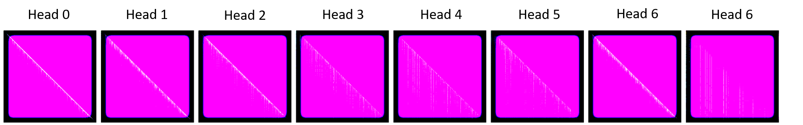
Figure 2: Enhanced Attention Matrix
Figure 3.1 provides a basic visualization of the attention matrix as it appears in the first layer of the model, showing the raw attention weights, with each value representing the strength of attention assigned to a particular token by the model. Although this visualization is informative, the large volume of data can obscure finer-grained patterns. To enhance visibility, Figure 3.2 displays the same attention matrix with increased luminance and contrast, making the diagonal patterns more apparent.
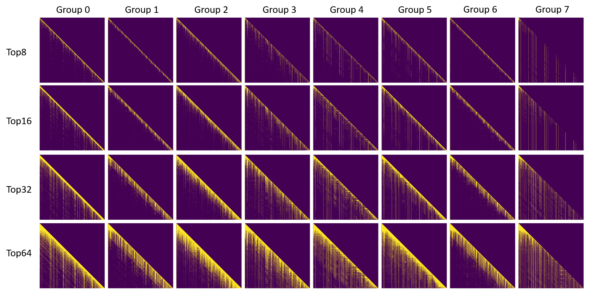
Figure 3: Top- Attention Matrix
To further improve clarity, we introduce a more refined approach by constructing a top- attention matrix, as illustrated in Figure 3.3(#fig:diff-topk-attn) This matrix is derived by selecting the top- highest attention values within each row, corresponding to each query token. These selected values are set to 1, while all other values are set to 0. This binary representation effectively highlights the most significant attention connections, making underlying patterns more apparent.
Given that LLaMA3-Instruct employs Group Query Attention (GQA), which allows multiple queries within a group to share attention calculations, the top- matrix is further refined by aggregating these queries using a logical OR operation. The resulting matrix not only simplifies the visualization but also reveals pronounced patterns that are less discernible in the raw attention matrix. This approach to visualizing the attention matrix allows for a clearer interpretation of how attention is distributed across tokens, which is essential for understanding the model’s behavior, especially in the context of long-sequence processing.
Each column in Figure 3.3 represents a distinct attention head, and each row corresponds to a different value, ranging from 8 to 64. By varying the value, we can observe how the model’s attention patterns evolve as the threshold for significant attention weights is adjusted. This multi-scale examination provides valuable insights into the hierarchical structure of attention within the model, offering potential avenues for optimizing long-context inference by focusing on the most influential tokens.
3.2 Attention Matrix Patterns Across Layers
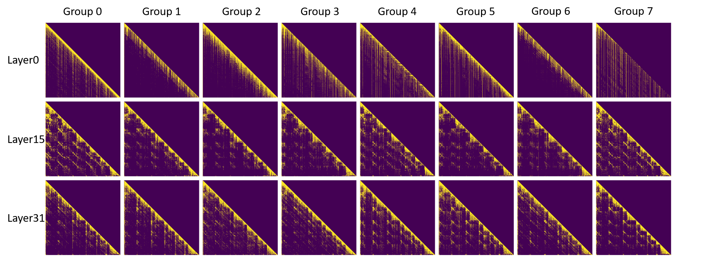
Figure 4: Attention Matrix Patterns Across Layers
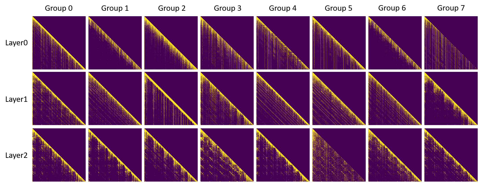
Figure 5: Attention Matrix Patterns in Layers 0, 1, and 2
We delve deeper into the analysis of attention matrix patterns across various layers of the LLaMA3-Instruct 8B model, focusing on layers 0, 15, and 31. This investigation is conducted using a top-32 selection method, which highlights the most significant attention weights, as illustrated in Figure 3.4. The attention patterns observed across these layers reveal substantial variation, indicative of the differing roles that each layer plays in processing information.
In the shallowest layer (layer 0), the attention matrix exhibits a continuous pattern, suggesting that at this early stage, the model processes information in a more linear and less segmented manner. This continuity may reflect the model’s initial attempts to encode basic positional and contextual information from the input sequence.
As we progress to the middle layers, exemplified by layer 15, the attention matrix begins to display a more segmented, or chunking, pattern. This
shift indicates that the model is starting to organize information into discrete chunks, potentially corresponding to higher-level semantic units. This chunking pattern becomes even more pronounced in the deeper layers, such as layer 31, where the model’s attention appears to focus more selectively on these chunks, suggesting a refined processing of complex semantic structures.
To better understand the onset of this chunking pattern, we further analyze the attention matrices in the first three layers (layers 0, 1, and 2), as depicted in Figure 3.5. Our analysis reveals that the chunking pattern begins to emerge as early as the second layer, although it is initially subtle. By the third layer, the pattern becomes more distinct, indicating that the model starts to segment information relatively early in its processing pipeline, with this segmentation becoming more defined as the model delves deeper into the input sequence.
These observations suggest that the LLaMA3-Instruct 8B model employs a hierarchical approach to attention, where early layers focus on broad continuous patterns, and deeper layers progressively refine this focus into more discrete, semantically meaningful chunks. This hierarchical attention processing is likely a key factor in the model’s ability to handle complex, long-context inputs effectively.
3.3 Four Distinct Attention Patterns
Through a detailed analysis of the top-32 attention patterns in the LLaMA3-Instruct 8B model applied to the MMLU dataset, we have identified four fundamental patterns that characterize the structure of the attention matrices. These patterns provide crucial insights into how the model processes and prioritizes information across different layers, as illustrated in Figure 3.6
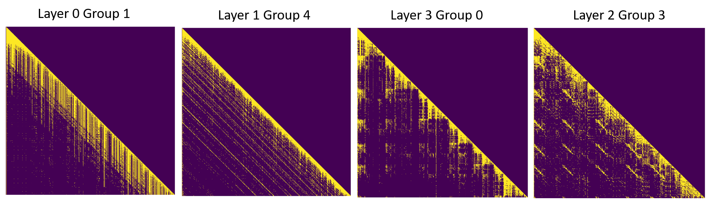
Figure 6: Attention Patterns
-
Token Absolute Position:
This pattern is characterized by each query consistently focusing on specific fixed positions within the input sequence. As the context lengthens, the model shifts its attention to recent, significant tokens rather than maintaining focus on earlier, fixed positions. This behavior suggests a dynamic adjustment of attention based on the relevance of tokens in the evolving context. This pattern is prominently observed in the top-32 attention matrix of layer 0, group 1, where the model’s attention is concentrated on certain absolute positions, reflecting a relatively fixed processing approach in the initial layers.
-
Token Relative Position:
Analogous to a 1D convolutional operation, this pattern involves the query focusing on a dilated sliding window of relative positions within the sequence. The query primarily attends to a few preceding tokens, maintaining a localized and relative focus rather than an absolute one. This pattern is evident in the top-32 attention matrix of layer 1, group 4, where the attention is distributed over a range of relative positions, indicating that the model is beginning to contextualize tokens within their immediate surroundings as it processes the sequence.
-
Chunk Absolute Position:
In the deeper layers of the model, the context is increasingly organized into semantic chunks, with the query’s attention focused on the initial tokens of each chunk. This pattern signifies a higher-level processing stage where the model identifies and prioritizes the starting points of meaningful segments within the input. The top-32 attention matrix of layer 3, group 0, exemplifies this pattern, where attention is concentrated on the leading tokens of identified chunks, reflecting the model’s progression towards more abstract and semantically driven processing.
-
Chunk Relative Position:
This pattern is characterized by a diagonal structure in the attention matrix, indicating that the query’s attention is aligned with the relative position within each chunk. This suggests that the model not only identifies chunks but also maintains awareness of the position of each token within these chunks, allowing for a more structured and contextually relevant processing. The top-32 attention matrix of layer 2, group 3, illustrates this diagonal pattern, showcasing the model’s capability to manage and process information within defined semantic boundaries.
3.4. Chunk Detection Methodology
Identifying semantic chunks within the attention matrix poses a more complex challenge compared to the relatively straightforward interpretation of token-level patterns. While token-level patterns are easier to comprehend and analyze, detecting chunk-level patterns, which reflect the model’s understanding of larger semantic units, remains a significant challenge. In this section, we propose a novel methodology to address this challenge by identifying specific layers, attention groups, and attention heads that exhibit distinct peaks at the beginning of semantic chunks. These peaks indicate that the corresponding queries are primarily focused on the initial tokens of these semantic chunks.
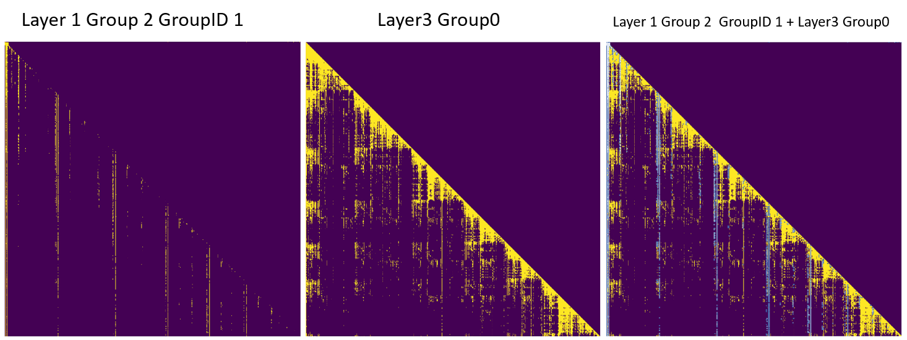
Figure 7: Chunk Detection
To demonstrate this approach, we utilize the top-8 attention matrix from layer 2, group 2, and group ID 1, as depicted in Figure 3.7. This attention matrix precisely aligns with the beginnings of semantic chunks identified in deeper layers of the model. For comparative analysis, we also examine the top-32 attention matrix from layer 3, group 0. The comparison underscores the consistency of chunk detection across different layers and attention groups.
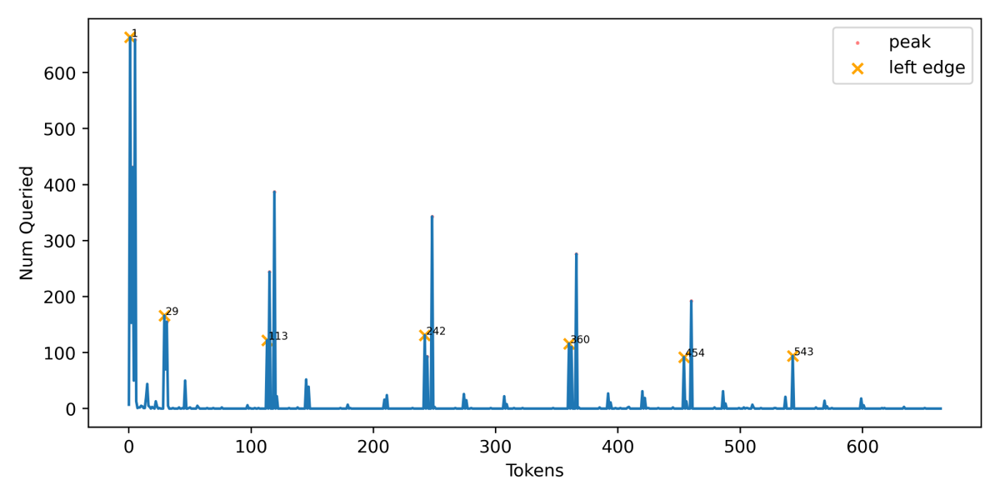
Figure 8: Chunk Detection
To further elucidate the chunk detection process, we first visualize the frequency of attention peaks corresponding to each token in the context,utilizing the top-8 attention matrix from layer 1, group 2, and group ID 1, as illustrated in Figure 3.8. This visualization provides a clear representation of how often each token is highlighted as a peak, indicating its significance in defining the boundaries of semantic chunks.
1 | |
Algorithm 1: Chunk Detection Algorithm
To systematically identify these peaks, we propose the algorithm detailed in Algorithm above. This algorithm operates in three stages:
- it initially identifies all candidate peaks within the attention matrix by employing a local maximum detection technique, followed by filtering these candidates using parameters such as height, distance, and threshold;
- it clusters these peaks using the DBSCA clustering algorithm;
- it selects the minimal index within each cluster to represent the left edge, or the beginning, of each semantic chunk. This approach ensures that only the most relevant peaks are considered, reducing noise and improving the accuracy of chunk detection.
Figure 9: Token Attention Peaks
It is important to note that token generation is inherently a dynamic process, meaning that attention peaks do not manifest instantaneously as they might in a static scenario. To better illustrate this dynamic process, we present a series of frames captured during the token generation process, as depicted in Figure 9. As the context lengthens, these peaks gradually emerge, highlighting that chunk detection is a streaming process rather than a static one. This dynamic emergence of peaks underscores the importance of real-time analysis in understanding how the model segments and processes information as it generates tokens.
3.5. Text Correspondence
The peaks observed in the attention matrices are not arbitrary but correspond to specific segments of the input text that are deemed highly relevant by the model during the inference process. To explore this correspondence in greater detail, we highlight the positions with the highest attention weights in Figure 10. This analysis is crucial for understanding how the LLaMA3-Instruct 8B model processes structured inputs and how it allocates attention across different layers, particularly in the context of the MMLU dataset.
The MMLU dataset is characterized by well-structured prompts that are inherently divided into semantic chunks. These chunks often correspond to different components of the input, such as question statements and multiple-choice options. The structured nature of these prompts enables the model to segment the input text into meaningful units, which are then processed hierarchically across different layers of the model. In the earlier layers, the model may focus on more granular details, while in the deeper layers, it tends to aggregate information, emphasizing broader patterns and relationships among the chunks.
Our analysis reveals that in deeper layers, the model exhibits a pronounced focus on previously presented options, particularly when it is tasked with inferring the correct answer. This behavior is indicative of a process where the model relies on its learned representation of the input structure to prioritize certain parts of the text that are most relevant to the decision-making process. For instance, the model might initially process individual options independently but later, as it progresses through the layers, begin to compare and contrast these options to deduce the most likely correct answer.
The highlighted peaks in Figure 10 demonstrate this hierarchical attention mechanism. Peaks correspond to segments of the text that are critical for the task at hand, such as key terms or phrases within the options that are highly indicative of the correct answer. This selective attention allows the model to effectively filter out less relevant information and focus computational resources on the most informative parts of the input.
Moreover, this pattern of attention suggests that the model is not merely attending to arbitrary positions within the text but is instead engaging in a more sophisticated form of reasoning. By concentrating attention on specific tokens and phrases that are strategically important for answering the prompt, the model exhibits a form of learned prioritization that is consistent with its training on large-scale structured datasets.
In summary, the correspondence between the attention peaks and the input text highlights the model’s ability to leverage the structured nature of the MMLU dataset to make informed decisions. This correspondence underscores the model’s capacity to dynamically adjust its attention based on the context and the specific task requirements, thereby enhancing its overall performance on complex, structured tasks.
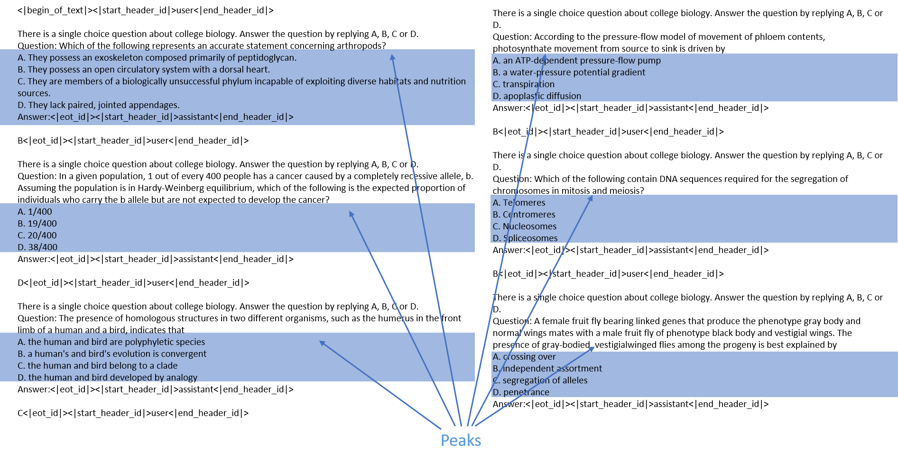
Figure 10: Text Correspondence
3.6. Dataset Generalization
While the MMLU dataset serves as a robust foundation for initial investigations, it is imperative to assess whether the identified attention patterns are consistent across other datasets. This section explores the generalizability of these patterns by analyzing additional samples from the MMLU dataset, as well as datasets from multi-agent systems and ShareGPT conversations.
3.6.1. MMLU Dataset
To validate the consistency of the observed attention patterns, we examined additional samples from the MMLU dataset. Specifically, we selected two further samples and analyzed their attention matrices at the 16th layer (layer 15). The results, depicted in Figure 11, reveal that these samples exhibit attention patterns similar to those identified in the initial analysis. Notably, due to varying context lengths across different samples, left padding was applied to align the sequences for batch inference, resulting in visible padding on the left side of the attention matrix for sample 2. Despite this adjustment, the underlying attention patterns remain consistent, suggesting that the model applies similar mechanisms across diverse instances within the MMLU dataset.
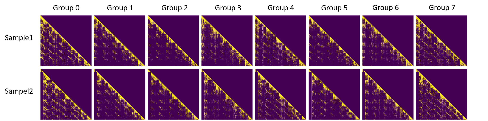
Figure 11: MMLU Dataset
3.6.2. Multi Agent Systems
The capabilities of a single Large Language Model (LLM), while impressive, may be limited when confronted with complex, multifaceted tasks requiring diverse reasoning, parallel processing, or collaborative problem-solving. To overcome these limitations, researchers have begun to explore the potential of multi-agent systems within the LLM framework [47][48]. A multi-agent system comprises multiple autonomous agents each representing an LLM or a specialized model working collaboratively to achieve a common goal. This approach harnesses the unique strengths of individual agents, such as specialized knowledge or distinct reasoning strategies, while facilitating communication and collaboration among them. The integration of multi-agent systems with LLMs holds significant potential for enhancing model performance, improving task efficiency, and extending the applicability of AI across a broader spectrum of domains.
To investigate whether the semantic chunk patterns identified in single-agent scenarios also emerge in multi-agent contexts, we conducted a series of experiments using a multi-agent setup, as illustrated in Figure 3.13. Surprisingly, the analysis revealed that the multi-agent context exhibits similar attention patterns at the same layer, group, and group ID, as shown in Figure3.12. This finding suggests that the mechanisms underlying semantic chunking are not only consistent within single-agent LLMs but also extend to more complex, collaborative environments.
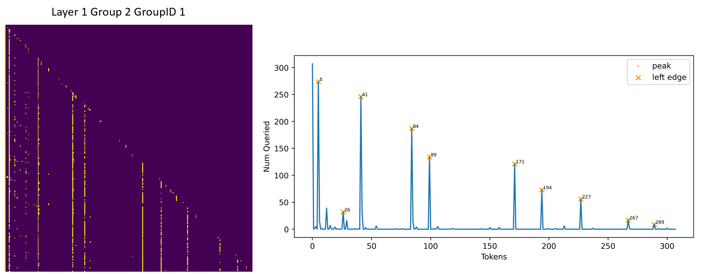
Figure 12: Multi-Agent Scenario
We also visualized the correspondence between the attention peaks and the input text within the multi-agent dataset. Our analysis revealed that the token "\n\n" consistently marks the beginning of semantic chunks in the attention mechanism, as shown in Figure 3.13. This observation underscores the model’s reliance on structural indicators, such as line breaks, to segment text into meaningful units, even in more complex, multi-agent scenarios.
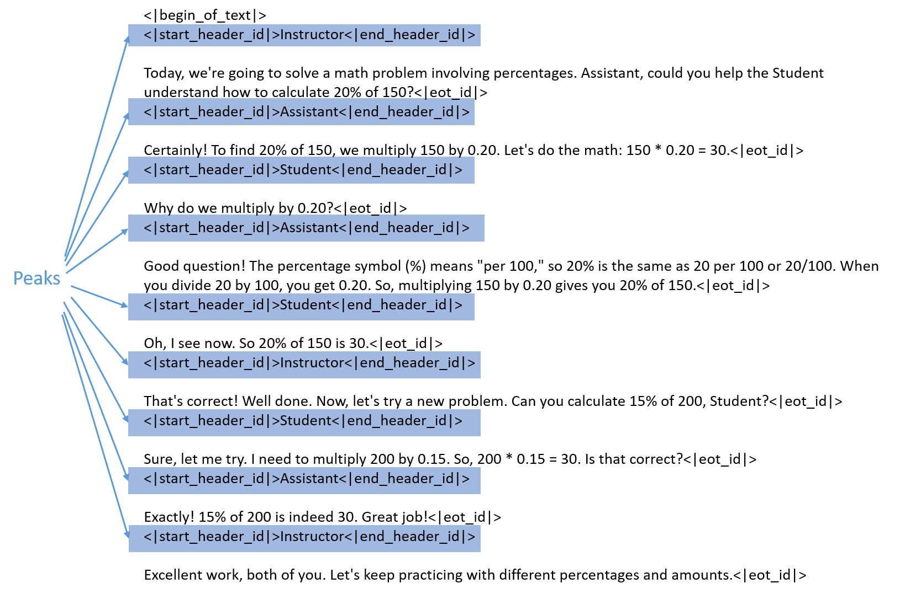
Figure 13: Multi-Agent Example
3.6.3. ShareGPT
ShareGPT is an innovative platform designed to facilitate the sharing and exploration of conversations generated by ChatGPT. It provides a unique opportunity to analyze how users interact with LLMs in everyday contexts. For this investigation, we utilized a filtered dataset [49] from ShareGPT to determine whether the attention patterns identified in the MMLU dataset are also present in user-generated conversations.
We analyzed the top-8 attention matrix from a ShareGPT sample and observed peaks that indicate the beginning of semantic chunks, as shown in Figure 3.14. It also shares similar patterns with Figure 3.7. The attention patterns in ShareGPT were found to be consistent with those identified in the MMLU dataset, further supporting the generalizability of these findings across different types of data.
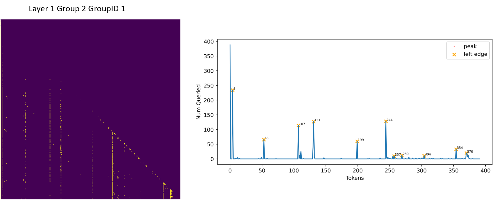
Figure 14: ShareGPT
To gain a deeper understanding of what triggers the start of semantic chunks, we visualized the highlighted segments of the text corresponding to these peaks, as shown in Figure 3.15. The analysis revealed that the attention not only focuses on structural tokens such as "\n" but also responds to shifts in the purpose or context of the sentence. This indicates that the model is sensitive to both structural and semantic changes within the conversation, which helps in dynamically segmenting the text into meaningful chunks.
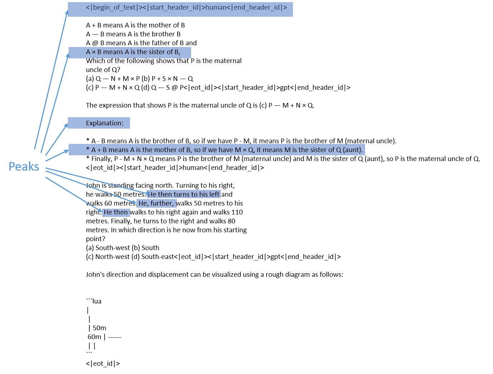
Figure 15: ShareGPT Example
3.6.4. SuperGLUE
Super General Language Understanding Evaluation(SuperGLUE) [50] is a benchmark designed to measure the performance of natural language understanding (NLU) systems. It builds upon its predecessor, General Language Understanding Evaluation (GLUE)[51], by introducing more challenging and diverse tasks aimed at pushing the boundaries of what AI systems can achieve in understanding and processing human language.
We analyzed the top-8 attention matrix from a SuperGLUE sample and observed peaks that indicate the beginning of semantic chunks, as shown in Figure 3.16. It also shares similar patterns with Figure 3.7. The attention patterns in SuperGLUE were found to be consistent with those identified in the MMLU dataset, further supporting the generalizability of these findings across different types of data.
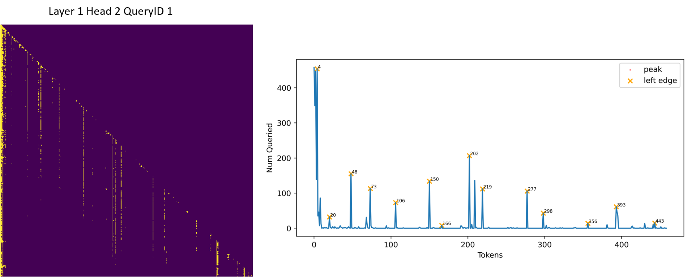
Figure 16: SuperGLUE
To further understand what triggers the start of semantic chunks, we visualized the highlighted segments of the text corresponding to these peaks, as depicted in Figure 3.17. The analysis revealed that the attention also focuses on structural tokens, such as ‘.’ and the choices ‘A’ and ‘B’.
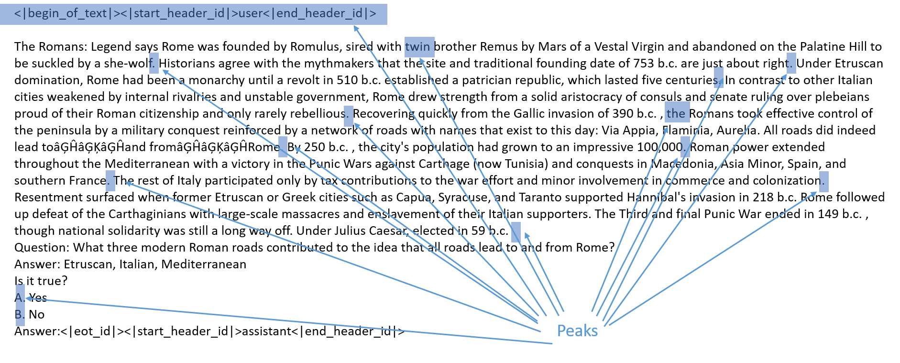
Figure 17: SuperGLUE Example
In this chapter, we analyzed the attention matrix patterns of the LLaMA3-Instruct 8B model, focusing on its performance with the MMLU dataset and beyond. We identified key attention patterns across different layers, explored methods for detecting semantic chunks, and examined how these patterns correspond to specific segments of text. Additionally, we assessed the generalizability of these patterns across various datasets, confirming their consistency and relevance. These insights contribute to a deeper understanding of how the model processes long-context inputs, offering potential avenues for optimization.
4. Methodology
In this chapter, we introduce a novel method called Chunk-Sink LLM. This approach draws conceptual inspiration from StreamLLM [20], which employs a sliding window technique while retaining the initial few tokens of a sequence to manage long-context processing efficiently. However, our method introduces a significant innovation by implementing a fixed set of tokens for each identified semantic chunk within the sequence. This fixed-token approach allows for a more structured retention strategy, optimizing the model’s ability to manage and process long sequences while maintaining critical contextual information.
This chapter is structured as follows:
-
Section 4.1: Attention Mechanism
In this section, we provide a comprehensive overview of the attention mechanism, a cornerstone of modern large language models (LLMs). We explore its fundamental principles, explaining how attention mechanisms enable models to focus on specific parts of the input during the generation process. This foundational understanding is crucial for appreciating the modifications introduced by the Chunk-Sink method.
-
Section 4.2: Group Query Attention
This section delves into the Group Query Attention (GQA) mechanism utilized by the LLaMA3-Instruct 8B model. We discuss how GQA differs from traditional attention mechanisms by allowing multiple queries within a group to share attention calculations, thereby optimizing computational efficiency. Understanding GQA is essential for grasping how the Chunk-Sink LLM manages attention distribution across extended sequences.
-
Section 4.3: KVCache
Here, we examine the role and operation of the KVCache in LLMs, focusing on how it functions during the inference process. We explore the challenges associated with the KVCache, particularly its tendency to grow over time as more context is processed, leading to increased memory consumption. This section sets the stage for understanding the necessity of efficient caching strategies like the one proposed in Chunk-Sink LLM.
-
Section 4.4: Expectation: Topk Attention
We begin by introducing the top- attention mechanism, which selects only the top- most relevant key-value pairs for computing attention. This approach offers high computational efficiency by focusing on a minimal subset of tokens, serving as a theoretical upper bound for comparison with token-dropping methods.
-
Section 4.5: Chunk Level sink KVcache for fast and accurate inference
In the final section, we build upon the observations and analyses presented in the previous chapter to introduce the Chunk-Sink methodology. This method leverages the principles of StreamLLM while incorporating a more structured approach to token retention within semantic chunks. We detail the design and implementation of Chunk-Sink, demonstrating how it improves the model’s performance in long-context scenarios by reducing memory overhead while preserving essential contextual information.
4.1. Attention Mechanism
The attention mechanism, originally introduced in the seminal work "Attention Is All You Need" [52], has become a foundational component in the architecture of large language models (LLMs). Its primary function is to enhance the model’s ability to focus selectively on specific parts of the input sequence when generating outputs, thereby enabling the model to capture long-range dependencies and intricate patterns within the data more effectively.
At its core, the attention mechanism operates by computing a weighted sum of the input representations, where the weights known as attention scores are dynamically calculated based on the relevance of each input token to the current context. This dynamic weighting allows the model to selectively emphasize certain parts of the input sequence, which is crucial for processing complex and context-dependent information.
Formally, given an input sequence of tokens, denoted as , where denotes the embedding of the -th token, the attention mechanism computes a hidden vector from query , key and value . To enable causal attention and accommodate variable-length sequences in batch inference, the mask is introduced to represent the positional offset. This mask operates differently depending on the positional encoding mechanism employed.
For instance, in Alibi [14], the mask is the distance between the and , and the mask represents the distance between tokens and . In contrast, for Rotary Positional Encoding (RoPE)[15], is an upper triangular matrix filled with a large negative value, typically the minimum value of the data type, ensuring that earlier tokens are weighted more heavily. During batch inference, left padding is applied, meaning the initial tokens in shorter sequences are assigned a large negative value in the mask , effectively reducing their influence in the attention computation.
The attention mechanism is mathematically expressed as Equation below
To derive the query, key, and value vectors, a linear transformation is applied to the input token embeddings, as shown in Equation below.
When using RoPE, the calculation of the key and query vectors is modified according to Equation below to incorporate the rotational positional encoding.
This mechanism allows the model to dynamically adapt its focus across the input sequence, enabling the effective processing of both local and global dependencies within the data. The flexibility and power of the attention mechanism are central to the success of modern LLMs, underpinning their ability to generate coherent and contextually appropriate outputs across a wide range of tasks.
4.2. Group Query Attention (GQA)
Grouped Query Attention (GQA) [53] is an optimized variant of the attention mechanism designed to enhance the efficiency and scalability of transformer models, particularly in the context of large-scale language models. As transformers grow in size and complexity, the computational and memory demands of the standard multi-head attention mechanism become increasingly burdensome. GQA addresses these challenges by reducing the number of distinct key and value projections while maintaining sufficient diversity in the query projections. This approach balances computational efficiency with the model’s ability to capture nuanced dependencies in the data.
In the standard multi-head attention mechanism, each attention head operates with its own set of query, key, and value projection matrices. This design allows each head to attend to different aspects of the input sequence, but it also leads to high computational and memory costs. Specifically, for attention heads, the model requires sets of key and value projections, which scale linearly with the number of heads as illustrated in
Equation below
Grouped Query Attention modifies this structure by grouping the attention heads and sharing key and value projections within each group while allowing query projections to remain distinct for each head. Formally, let be the number of groups, with each group containing heads, such that . The attention heads in the -th group share the same key and value projection matrices but have individual query projection matrices, as described in Equation below
This approach significantly reduces the computational burden by decreasing the number of unique key and value projections required thereby lowering memory usage and improving efficiency. At the same time, by preserving the diversity of the query projections, GQA ensures that the model retains its ability to capture and process complex relationships within the input data.
GQA is particularly advantageous in large-scale models such as Llama3 where the number of attention heads can be substantial. By reducing redundancy in the key and value projections while maintaining sufficient variability in the query projections, GQA strikes a balance between computational efficiency and model expressiveness, making it an effective solution for scaling up transformer architectures in large language models.
4.3. KVCache
The KVCache mechanism plays a crucial role in optimizing the inference process of transformer models, particularly in autoregressive tasks such as text generation. By allowing for the reuse of previously computed key and value pairs across different layers during decoding, KVCache significantly reduces the redundant computations that typically occur in sequential generation tasks.
In transformer models, especially in the context of autoregressive tasks, input sequences are processed token by token. During inference, the model generates each subsequent token based on the sequence generated thus far, which necessitates the recalculation of the attention mechanism for all preceding tokens. This repetitive computation is computationally intensive and becomes increasingly burdensome as model size and complexity grow, particularly in models with multiple layers and numerous attention heads. To address this inefficiency, KVCache was introduced to store and reuse key and value pairs, thereby streamlining the computation process.
The generation process can be formed as Equation below.
KVCache optimizes this by caching the key and value pairs and from previous time steps so that, at time step , the computation is only required for the new token , rather than the entire sequence. Formally, the cache is defined as Equation below
The revised attention mechanism with KVCache at time step is given by Equation below
The primary advantage of using KVCache is the substantial reduction in computational complexity during the inference phase. By caching and reusing the key-value pairs, the model avoids redundant calculations, thus accelerating the generation process and reducing memory usage. This is particularly beneficial in real-time applications such as conversational AI and large-scale text generation systems.
KVCache has been integrated into various transformer architectures to enhance performance during inference, as demonstrated in models like Llama3 [21] and other large language models. The efficiency gains provided by KVCache have made it a standard practice in the deployment of autoregressive transformers in both research and industry settings.
4.4. Expectation: Topk Attention
As discussed in Section 3, the attention matrix within large language models (LLMs) is inherently sparse, meaning that a significant portion of the potential interactions between tokens contributes minimally to the final output. Building on this observation, we introduce a top- attention mechanism, inspired by Google’s top- attention approach [40], which selectively focuses on the most relevant token interactions.
The top- attention mechanism is mathematically defined in Equation below.
In this formulation, for each query , the mechanism identifies the top- keys and corresponding values based on the highest attention scores. These scores are computed as the dot product between the query and the key , adjusted by the mask to account for positional dependencies or other constraints. The selected keys and values are then used to compute the attention output , ensuring that the model’s computational resources are concentrated on the most significant token pairs.
Given the sparsity of the attention matrix, we hypothesize that only a limited subset of tokens those corresponding to the highest attention scores contributes significantly to the model’s performance [^20; ^36; ^40; ^54]. This assumption underpins the rationale for top- attention, as it reduces the computational burden by focusing on the most influential token pairs while potentially preserving the accuracy of the model.
To validate this hypothesis, we evaluate the performance of the top- attention mechanism across various datasets. The results of these experiments, as detailed in the next Chapter, provide insights into the efficacy of this approach in maintaining model performance while optimizing computational efficiency.
4.5. Chunk Level sink KVcache for fast and accurate inference
Building upon the detailed discussion of chunk patterns in Section 3.4, we introduce a chunk-level sink KVCache mechanism designed to enhance the efficiency of inference in large language models. Given predefined chunk start positions , this approach extends the StreamLLM [20] methodology by maintaining a distinct sink for each identified chunk. The basic KVCache operation is represented in Equation below,
and the chunk-level variant is formalized in Equation below
In this formulation, denotes the sequence length. It is important to note that the chunking pattern does not manifest in the first layer, which remains continuous at the token level. As a result, the chunk-level sink KVCache mechanism is implemented exclusively in subsequent layers, where chunking patterns become more evident, as illustrated in Figure 4.1.
![Illustration of Chunk Sink Assume the language model is pre-trained on texts of length and performing inference on the th token (). (a) Dense Attention exhibits a linear growing computational consumption and memory usage for cache size. Its performance diminishes when the text length surpasses the pre-training text length. (b) Window Attention caches the most recent tokens' keys and values (KV). Although efficient during inference, performance degrades significantly once the keys and values of the initial tokens are evicted. (c) StreamingLLM maintains the attention sink (a set of initial tokens) to ensure stable attention computation, in conjunction with recent tokens. This approach provides comparably better performance than window attention but it suffers from the loss of information from middle tokens. (d) Chunk Sink preserves not only the initial tokens but also a set of initial tokens for each semantic chunk, thereby retaining information from the middle of the sequence while remaining as efficient as StreamingLLM.](chunk_sink_arch.png)
Figure 18: Chunk Sink Illustration
The chunk-level sink KVCache offers a significant improvement in computational efficiency by reducing the need to repeatedly compute attention for tokens within a chunk that do not contribute significantly to the model’s output. By caching key-value pairs at the chunk level, this method optimizes memory usage and accelerates the inference process, particularly in scenarios where long-context dependencies are critical.
This approach not only builds on the principles established by StreamLLM but also adapts them to accommodate the specific needs of large language models that process extensive input sequences. The chunk-level KVCache thus represents a practical advancement in the ongoing effort to enhance the scalability and efficiency of LLMs in real-world applications.
5. Experiment
In this chapter, we begin by examining the performance of the top- attention mechanism in Section 5.2. Subsequently, we conduct a systematic evaluation of the performance and efficiency of the LLaMA3-Instruct 8B model, with particular emphasis on its ability to perform reasoning tasks, as discussed in Section 5.3. Additionally, we explore the parameter sensitivity of both the StreamLLM and Chunk Sink methods in Section 5.3. The detailed experimental setup is provided in Section 5.1
Setup
-
LLM: Llama3-Instruct 8B [55]
-
GPU: NVIDIA A100 GPU 40GB version
-
Dataset:
-
MMLU
-
CEval
-
-
Number of Repetitions: The experiment was conducted a single time. This decision was made based on preliminary analysis, which indicated that multiple runs would yield similar results while significantly increasing computational time. Therefore, to optimize resource efficiency, the experiment was performed once.
-
Metric: The prompt consists of five examples followed by one question, making it a five-shot task. The evaluation metric employed is accuracy, defined as the proportion of correct predictions. Specifically, if the LLM’s prediction matches the correct choice for a given example, it is considered correct; otherwise, it is marked as incorrect. The accuracy is formally defined in Equation below
5.1. Topk Attention Performance
Benchmark datasets are indispensable tools for evaluating and advancing the capabilities of large language models (LLMs) in natural language processing (NLP). Among the most prominent and widely utilized benchmarks are C-Eval [23], and the Massive Multitask Language Understanding (MMLU) dataset [22]. These datasets are meticulously curated to assess various dimensions of language comprehension, reasoning, and generalization, providing researchers and practitioners with standardized metrics for comparing model performance across diverse tasks.
To validate our hypothesis that only a limited subset of tokens significantly contributes to the overall accuracy of LLMs, we conducted a series of experiments using the top- attention mechanism as described in Equation topk-attn. The experiments were performed on subsets of the C-Eval and MMLU datasets, selected for their complexity and relevance in testing the efficacy of the top- approach. The performance results of these experiments are illustrated in Figure 19.
Notably, the context lengths in these datasets often exceed 128 tokens, frequently reaching up to tokens. This characteristic is particularly challenging for attention mechanisms, as it requires the model to efficiently manage and process extensive sequences. Despite this challenge, our experiments demonstrate that even with , where only a small fraction of the available tokens are utilized in the top- attention mechanism, the model still maintains robust performance. This outcome underscores the inherent sparsity in the attention distribution, confirming that a limited subset of tokens—those with the highest attention scores—are primarily responsible for driving the model’s predictions.
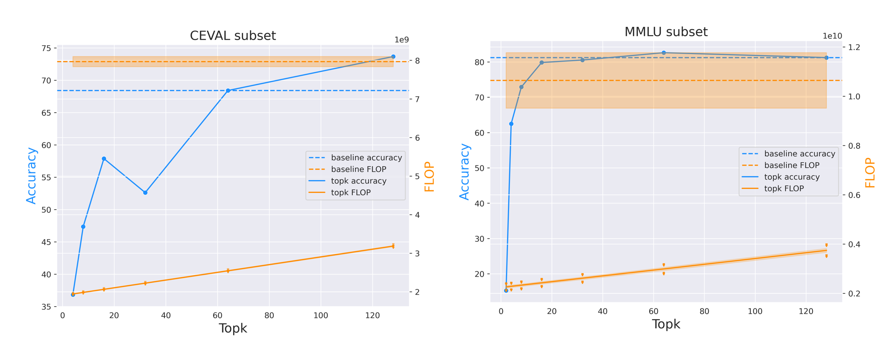
Figure 19: Top- Attention Performance
Disregarding the computational cost associated with identifying the top- elements, the results shown in Figure 19 indicate that the top- attention mechanism strikes an effective balance between computational efficiency and model accuracy, making it a promising approach for optimizing the performance of large language models (LLMs) in resource-constrained environments. The FLOP calculation, as detailed in Equation below, incorporates the sequence length , the attention head dimension (set to 128), and the number of attention heads (set to 32). The parameter denotes the number of top- elements considered in the top- attention mechanism.
It is important to note that each point in the figure represents a sequence, with the shaded region indicating the one-sigma confidence interval.
This mechanism’s ability to prioritize the most relevant token interactions with minimal accuracy loss underscores its potential for broader application in large-scale language models, especially in scenarios with limited computational resources. In some cases, this approach may even surpass the baseline performance, as the exclusion of noisy or irrelevant token information can lead to improved model accuracy.
5.2. Memory Consumption and Accuracy
In the realm of top- attention mechanisms, various methods have been proposed to approximate the efficiency of top- selection, particularly in streaming scenarios. Notable among these are H2O [19] and StreamLLM [20]. In this experiment, we systematically evaluate different parameter settings for these two methods alongside our proposed Chunk Sink approach. The primary metric used to assess memory efficiency is the number of tokens stored in the key-value cache (KVCache), which directly correlates with memory consumption during inference.
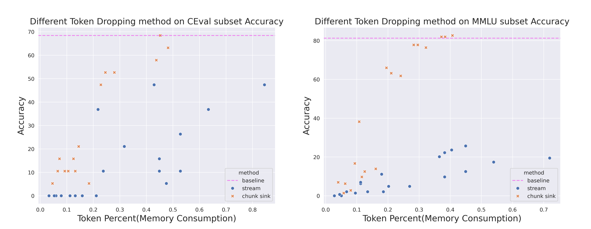
Figure 20: Memory Consumption and Accuracy
The results of these experiments are depicted in Figure 20, which illustrates the trade-off between accuracy and memory consumption for each method. The optimal method is identified by its position in the plot—specifically, methods that reside closer to the top-left corner are deemed more efficient, as they achieve higher accuracy with lower memory consumption.
In the figure, the orange crosses represent the performance of our Chunk Sink method. When compared to StreamLLM, our approach consistently demonstrates superior accuracy for the same number of tokens stored in the KVCache. This highlights that Chunk Sink is more efficient in terms of memory utilization while maintaining or even improving model accuracy.
It is important to note that the number of tokens consumed is calculated according to Equation below, where represents the toke percentage. The token percentage is computed based on the average sequence length. This explains why, when the token percentage reaches 100%, StreamLLM is unable to match the baseline performance.
Overall, these results underscore the effectiveness of the Chunk Sink approach, particularly in scenarios where memory efficiency is critical. By optimizing the balance between memory consumption and model accuracy, Chunk Sink offers a practical solution for deploying large language models in resource-constrained environments, without compromising on performance.
5.3. Parameter Sensitivity
To comprehensively assess the sensitivity of different methods to various parameter settings, we conducted an ablation study, the findings of which are illustrated in Figure 21 This analysis is crucial for understanding how changes in key parameters affect the performance and accuracy of each method, thereby guiding optimal parameter selection in practical applications.
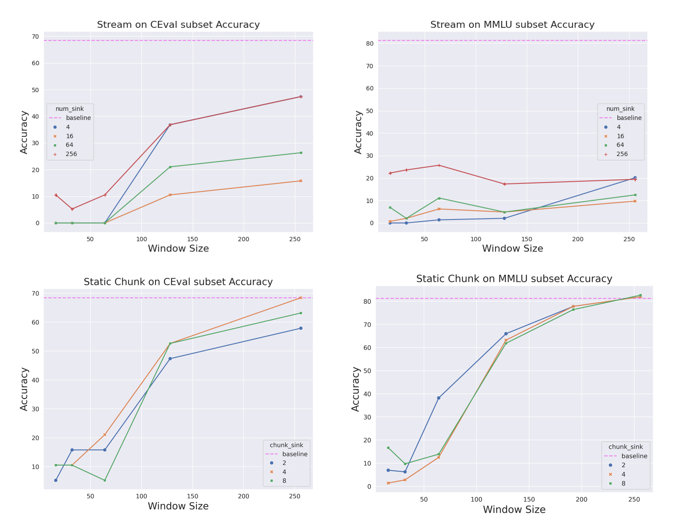
Figure 21: Parameter Sensitivity Analysis
-
Chunk Sink Method:
The primary parameter influencing the Chunk Sink method is the window size. Our analysis reveals that as the window size increases, the accuracy of the model shows only marginal improvements. This trend suggests the existence of a saturation point beyond which further increases in window size yield diminishing returns. This behavior indicates that while a larger window size may capture more contextual information, it does not necessarily translate into proportional gains in accuracy, highlighting the importance of selecting an optimal window size for efficient performance.
It is also worth noting that the window size should exceed the size of semantic chunks within the sequence, as tokens within the current chunk typically exhibit high attention, as observed in Section 3.
-
Stream LLM:
For the StreamLLM method, accuracy improves with an increasing number of sinks, highlighting the critical role of the number of sinks as a key parameter in the method’s effectiveness. In the case of the CEval dataset, window size has a positive impact on accuracy, but this effect saturates beyond a size of 128. Conversely, for the MMLU dataset, window size has minimal influence on accuracy. This discrepancy is likely due to larger window sizes introducing noise and irrelevant information, which can negatively affect model performance.
The insights gained from this parameter sensitivity analysis are critical for optimizing the performance of large language models in diverse applications. By understanding the impact of different parameter settings, practitioners can more effectively balance computational efficiency and model accuracy, tailoring the model to specific use cases and resource constraints.
This chapter evaluates the LLaMA3-Instruct 8B model’s performance on long-context inference tasks using the ‘college_biology’ subset of the MMLU dataset. Through experiments with top- attention, we confirmed its efficiency in balancing computational demands with accuracy across various benchmarks. The Chunk Sink method outperformed H2O and StreamLLM, offering better memory efficiency and accuracy. A parameter sensitivity analysis underscored the importance of tuning key settings, such as window size, to optimize the model’s performance in memory-constrained environments.
6. Conclusion
In this study, we have explored the challenges and opportunities associated with managing memory during the inference stage of Large Language Models (LLMs), particularly focusing on the LLaMA3-Instruct 8B model. The exponential growth of the Key-Value cache (KVcache) as context length increases presents significant hurdles for efficient inference, especially in resource-constrained environments.
Our analysis of the attention patterns within the LLaMA3-Instruct 8B model revealed that the model’s attention mechanism can be effectively managed at a chunk-grained level, allowing for significant reductions in memory usage without compromising performance. This was demonstrated through the introduction of the Chunk-Sink LLM, which builds on the principles of StreamLLM but introduces a fixed set of tokens for each identified chunk, thereby enhancing inference efficiency.
Experiments conducted on the MMLU dataset subset, specifically the ‘college_biology’ category, validated the effectiveness of the top- attention mechanism. The results indicated that focusing on a limited subset of tokens significantly contributes to maintaining model accuracy while optimizing memory consumption. Furthermore, our Chunk Sink method showed superior performance compared to existing methods such as StreamLLM and H2O, particularly in scenarios with varying window sizes and memory constraints.
The parameter sensitivity analysis further highlighted the robustness o the Chunk Sink approach, demonstrating its ability to maintain high accuracy with minimal memory usage across a range of parameter settings. This adaptability is crucial for deploying LLMs in real-world applications where computational resources may be limited.
However, the current implementation of the Chunk Sink method is limited to static contexts. This restricts its applicability in dynamic, real-time scenarios where input streams continuously evolve. To fully= realize the potential of Chunk Sink in industrial applications, future work should focus on developing a streaming version of the method. Such advancements would enable the Chunk Sink approach to be more widely adopted in scenarios requiring real-time processing and dynamic context adaptation.
In summary, the methods and findings presented in this paper contribute to the ongoing efforts to enhance the scalability and efficiency of LLMs. By optimizing memory management and refining attention mechanisms, we pave the way for more efficient deployment of LLMs across diverse hardware configurations, ultimately broadening the accessibility and applicability of these powerful models in both research and industry settings.
Refernece
- Radford, A., & Narasimhan, K. (2018). Improving Language Understanding by Generative Pre-Training. Retrieved from Link ↩
- Brown, T. B., Mann, B., Ryder, N., Subbiah, M., Kaplan, J., Dhariwal, P., et al. (2020). Language models are few-shot learners. In NeurIPS 2020. Link ↩
- Zhang, S., Roller, S., Goyal, N., Artetxe, M., Chen, M., Chen, S., … & Zettlemoyer, L. (2022). OPT: Open Pre-trained Transformer Language Models. ArXiv. Link ↩
- Achiam, J., Adler, S., Agarwal, S., Ahmad, L., Akkaya, I., Aleman, F. L., … & Zoph, B. (2023). GPT-4 Technical Report. Link ↩
- Touvron, H., Lavril, T., Izacard, G., Martinet, X., Lachaux, M. A., Lacroix, T., … & Lample, G. (2023). LLaMA: Open and Efficient Foundation Language Models. ArXiv. Link ↩
- Zhao, W. X., Zhou, K., Li, J., Tang, T., Wang, X., Hou, Y., … & Wen, J. R. (2023). A Survey of Large Language Models. arXiv preprint arXiv:2303.18223. Link ↩
- Kwiatkowski, T., Palomaki, J., Redfield, O., Collins, M., Parikh, A., Alberti, C., et al. (2019). Natural Questions: A Benchmark for Question Answering Research. Transactions of the Association for Computational Linguistics, 7, 452–466. MIT Press, Cambridge, MA. Link ↩
- Chen, M., Tworek, J., Jun, H., Yuan, Q., Ponde de Oliveira Pinto, H., Kaplan, J., et al. (2021). Evaluating Large Language Models Trained on Code. arXiv. Link ↩
- Nakano, R., Hilton, J., Balaji, S., Wu, J., Ouyang, L., Kim, C., et al. (2022). WebGPT: Browser-assisted question-answering with human feedback. arXiv. Link ↩
- Qin, H. X., Jin, S., Gao, Z., Fan, M., & Hui, P. (2024). CharacterMeet: Supporting Creative Writers’ Entire Story Character Construction Processes Through Conversation with LLM-Powered Chatbot Avatars. In Proceedings of the CHI Conference on Human Factors in Computing Systems (p. 1051). ACM, New York, NY, USA. Link ↩
- Yang, H., Lu, H., Zeng, X., Liu, Y., Zhang, X., Yang, H., et al. (2024). Stephanie: Step-by-Step Dialogues for Mimicking Human Interactions in Social Conversations. arXiv. Link ↩
- Wang, L., Ma, C., Feng, X., Zhang, Z., Yang, H., Zhang, J., et al. (2023). A Survey on Large Language Model based Autonomous Agents. arXiv. Link ↩
- Wang, G., Xie, Y., Jiang, Y., Mandlekar, A., Xiao, C., Zhu, Y., Fan, L., & Anandkumar, A. (2023). Voyager: An Open-Ended Embodied Agent with Large Language Models. In Intrinsically-Motivated and Open-Ended Learning Workshop @NeurIPS2023. Link ↩
- Press, O., Smith, N., & Lewis, M. (2022). Train Short, Test Long: Attention with Linear Biases Enables Input Length Extrapolation. In International Conference on Learning Representations. Link ↩
- Su, J., Lu, Y., Pan, S., Wen, B., & Liu, Y. (2021). RoFormer: Enhanced Transformer with Rotary Position Embedding. arXiv. Link ↩
- Fan, W., Ding, Y., Ning, L., Wang, S., Li, H., Yin, D., et al. (2024). A Survey on RAG Meeting LLMs: Towards Retrieval-Augmented Large Language Models. arXiv. Link ↩
- Gao, Y., Xiong, Y., Gao, X., Jia, K., Pan, J., Bi, Y., et al. (2024). Retrieval-Augmented Generation for Large Language Models: A Survey. arXiv. Link ↩
- Beltagy, I., Peters, M. E., & Cohan, A. (2020). Longformer: The Long-Document Transformer. arXiv. Link ↩
- Zhang, Z., Sheng, Y., Zhou, T., Chen, T., Zheng, L., Cai, R., et al. (2023). H₂O: Heavy-Hitter Oracle for Efficient Generative Inference of Large Language Models. arXiv. Link ↩
- Xiao, G., Tian, Y., Chen, B., Han, S., & Lewis, M. (2024). Efficient Streaming Language Models with Attention Sinks. arXiv. Link ↩
- AI@Meta. (2024). Llama 3 Model Card. Link ↩
- It is a benchmark designed to evaluate the knowledge and reasoning abilities of language models across a wide range of subjects. Each question in the dataset is multiple-choice with four possible answers, only one of which is correct. For this study, we choose a subset of MMLU which is the “college_biology” category containing 144 questions ↩
- Hendrycks, D., Burns, C., Basart, S., Zhai, Z., & Steinhardt, J. (2020). MMLU: A Comprehensive Benchmark for Language Understanding. arXiv. Link ↩
- CEval is a large-scale benchmark designed to assess the performance of large language models (LLMs) on Chinese academic examinations. It spans a broad range of subjects, including humanities, social sciences, STEM, and more, across various difficulty levels. Each question in the dataset is multiple-choice with four possible answers, only one of which is correct. For this study, we choose a subset “computer_network” of CEval which contains 19 sequences. ↩
- Zhang, Y., Liu, Y., Wang, Y., Wang, Y., Zhang, Y., Zhang, Y., & Zhang, C. (2023). CEval: A Benchmark for Evaluating Language Models on Code Understanding. arXiv. Link ↩
- Zhou, Z., Ning, X., Hong, K., Fu, T., Xu, J., Li, S., et al. (2024). A Survey on Efficient Inference for Large Language Models. arXiv. Link ↩
- Shi, L., Zhang, H., Yao, Y., Li, Z., & Zhao, H. (2024). Keep the Cost Down: A Review on Methods to Optimize LLM’s KV-Cache Consumption. arXiv. Link ↩
- Liu, Z., Desai, A., Liao, F., Wang, W., Xie, V., Xu, Z., Kyrillidis, A., & Shrivastava, A. (2023). Scissorhands: Exploiting the Persistence of Importance Hypothesis for LLM KV Cache Compression at Test Time. arXiv. Link ↩
- Oren, M., Hassid, M., Yarden, N., Adi, Y., & Schwartz, R. (2024). Transformers are Multi-State RNNs. arXiv. Link ↩
- Li, Y., Huang, Y., Yang, B., Venkitesh, B., Locatelli, A., Ye, H., et al. (2024). SnapKV: LLM Knows What You are Looking for Before Generation. arXiv. Link ↩
- Cai, Z., Zhang, Y., Gao, B., Liu, Y., Liu, T., Lu, K., et al. (2024). PyramidKV: Dynamic KV Cache Compression based on Pyramidal Information Funneling. arXiv. Link ↩
- Hooper, C., Kim, S., Mohammadzadeh, H., Mahoney, M. W., Shao, Y. S., Keutzer, K., & Gholami, A. (2024). KVQuant: Towards 10 Million Context Length LLM Inference with KV Cache Quantization. arXiv. Link ↩
- Yang, J. Y., Kim, B., Bae, J., Kwon, B., Park, G., Yang, E., et al. (2024). No Token Left Behind: Reliable KV Cache Compression via Importance-Aware Mixed Precision Quantization. arXiv. Link ↩
- Kang, H., Zhang, Q., Kundu, S., Jeong, G., Liu, Z., Krishna, T., & Zhao, T. (2024). GEAR: An Efficient KV Cache Compression Recipe for Near-Lossless Generative Inference of LLM. arXiv. Link ↩
- Dong, S., Cheng, W., Qin, J., & Wang, W. (2024). QAQ: Quality Adaptive Quantization for LLM KV Cache. arXiv. Link ↩
- Sheng, Y., Zheng, L., Yuan, B., Li, Z., Ryabinin, M., Fu, D. Y., et al. (2023). High-throughput Generative Inference of Large Language Models with a Single GPU. In International Conference on Machine Learning. Link ↩
- Child, R., Gray, S., Radford, A., & Sutskever, I. (2019). Generating Long Sequences with Sparse Transformers. arXiv. Link ↩
- Zaheer, M., Guruganesh, G., Dubey, A., Ainslie, J., Alberti, C., Ontanon, S., et al. (2021). Big Bird: Transformers for Longer Sequences. arXiv. Link ↩
- Dai, S., Genc, H., Venkatesan, R., & Khailany, B. (2023). Efficient Transformer Inference with Statically Structured Sparse Attention. In 2023 60th ACM/IEEE Design Automation Conference (DAC) (pp. 1-6). IEEE. DOI:10.1109/DAC56929.2023.10247993 ↩
- Fu, T., Ning, X., Chen, B., Wu, T., Zhang, G., Dai, G., et al. (2024). SemSA: Semantic Sparse Attention is hidden in Large Language Models. Link ↩
- Wang, H., Zhang, Z., & Han, S. (2021). SpAtten: Efficient Sparse Attention Architecture with Cascade Token and Head Pruning. In 2021 IEEE International Symposium on High-Performance Computer Architecture (HPCA). IEEE. DOI:10.1109/HPCA51647.2021.00018 ↩
- Gupta, A., Dar, G., Goodman, S., Ciprut, D., & Berant, J. (2021). Memory-efficient Transformers via Top-k Attention. In Proceedings of SustaiNLP: Workshop on Simple and Efficient Natural Language Processing. Association for Computational Linguistics. ↩
- Tay, Y., Dehghani, M., Bahri, D., & Metzler, D. (2022). Efficient Transformers: A Survey. arXiv. Link ↩
- Dong, Z., Tang, T., Li, L., & Zhao, W. X. (2023). A Survey on Long Text Modeling with Transformers. arXiv. Link ↩
- Zhang, S., Dong, L., Li, X., Zhang, S., Sun, X., Wang, S., et al. (2023). Instruction Tuning for Large Language Models: A Survey. arXiv. Link ↩
- Hu, E. J., Shen, Y., Wallis, P., Allen-Zhu, Z., Li, Y., Wang, S., et al. (2022). LoRA: Low-Rank Adaptation of Large Language Models. In International Conference on Learning Representations. Link ↩
- Dao, T., Fu, D. Y., Ermon, S., Rudra, A., & Ré, C. (2022). FlashAttention: Fast and Memory-Efficient Exact Attention with IO-Awareness. In Advances in Neural Information Processing Systems (NeurIPS). ↩
- Dao, T. (2024). FlashAttention-2: Faster Attention with Better Parallelism and Work Partitioning. In International Conference on Learning Representations (ICLR). ↩
- Han, S., Zhang, Q., Yao, Y., Jin, W., Xu, Z., & He, C. (2024). LLM Multi-Agent Systems: Challenges and Open Problems. arXiv. Link ↩
- Li, J., Zhang, Q., Yu, Y., & Fu, Q., Ye, D. (2024). More Agents Is All You Need. arXiv. Link ↩
- theblackcat102. (2023). ShareGPT English Dataset. Hugging Face. Link ↩
- Sarlin, P.-E., DeTone, D., Malisiewicz, T., & Rabinovich, A. (2020). SuperGlue: Learning Feature Matching with Graph Neural Networks. arXiv. Link ↩
- Wang, A., Singh, A., Michael, J., Hill, F., Levy, O., & Bowman, S. R. (2019). GLUE: A Multi-Task Benchmark and Analysis Platform for Natural Language Understanding. arXiv. Link ↩
- Wang, A., Singh, A., Michael, J., Hill, F., Levy, O., & Bowman, S. R. (2019). GLUE: A Multi-Task Benchmark and Analysis Platform for Natural Language Understanding. arXiv. Link ↩
- Ainslie, J., Lee-Thorp, J., de Jong, M., Zemlyanskiy, Y., Lebrón, F., & Sanghai, S. K. (2023). GQA: Training Generalized Multi-Query Transformer Models from Multi-Head Checkpoints. arXiv. Link ↩
- Tay, Y., Bahri, D., Yang, L., Metzler, D., & Juan, D.-C. (2020). Sparse Sinkhorn Attention. In Proceedings of the 37th International Conference on Machine Learning (ICML’20). JMLR.org. ↩
- Touvron, H., Lavril, T., Izacard, G., Martinet, X., Lachaux, M.-A., Lacroix, T., et al. (2023). LLaMA: Open and Efficient Foundation Language Models. arXiv. Link ↩